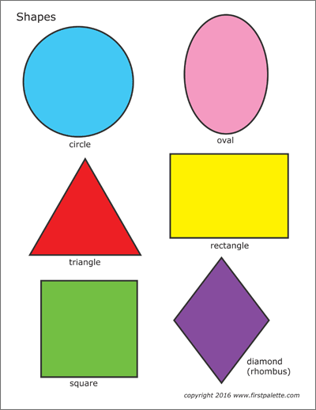

General Syntax & Usage
The <img> element allows for image content to be embeded into a web page. The only required attribute for this element is the src attribute which takes a valid URL/Path to the location of the image to be displayed. Although the src attribute is technically the only required attribute, it is highly recommended to include the alt attribute as well. This attribute takes in a description of the image and serves as both the fallback text for when the image cannot load and something to help screen readers read out to the visually imparied. Here's a small example:
<img src="images/forth-wanderers.jpg" alt="Forth Wanderers self titled album cover">
Which then renders as
Interactivity
Using an Image as a Link
You've probably some across images that act as links before, such as a logo in the top left of a website that links back to the home page. This is fairly easy to implement, as you just need to wrap the <img> element in an <a> element. When having an <img> element as a link though, it is often helpful to use the title attribute so as to give the user a hint to where the page links.
<a href="https://google.com" title="Google">
<img src="images/charly-bliss.jpg" alt="Album cover for Guppy by Charly Bliss">
</a>
Mapping Shapes of an Image as a Link
Sometimes you might want to only make part of an image a link instead of the whole image, and when that's the case the element <map> comes in handy. In the example below I've added a map to the image so that only the are clickable areas. Doing this manually isn't too bad, but for this demonstration I used the tool image-map.net to help create it. Built in there are only three types of shapes: Circles, Rectangles, and Polygons. Since there is no oval shape, I had to approximate it with three circles.
<img src="images/charly-bliss.jpg" alt="Album cover for Guppy by Charly Bliss" usemap="#image-map">
<map name="image-map">
<area alt="Circle" href="https://google.com" coords="100,104,70" shape="circle">
<area alt="Triangle" href="https://google.com" coords="107,199,38,323,178,322" shape="poly">
<area alt="Diamond" href="https://google.com" coords="281,484,220,403,280,326,341,406" shape="poly">
<area alt="Square" href="https://google.com" coords="53,355,173,475" shape="rect">
<area alt="Rectangle" href="https://google.com" coords="216,196,365,301" shape="rect">
<area alt="Center of Oval" href="https://google.com" coords="287,97,52" shape="circle">
<area alt="Top of Oval" href="https://google.com" coords="286,62,43" shape="circle">
<area alt="Bottom of Oval" href="https://google.com" coords="286,125,43" shape="circle">
</map>

Accessibility
As shown in the General Syntax & Usage section, the alt attribute is critical when using the <img> element. Without the alt attribute, the computer parsing the HTML would have no way of knowing what is in the picture. Many screen readers that the visually impaired use rely on these alt attributes to read out what is inside the picture. Without it, they are left with only the file name which often isn't descriptive enough, if at all. Secondly, website crawling bots such as Google's have no idea what are in your photos either, which hurts your accessibility score and in turn your search engine ranking. Finally, as demonstrated above, it acts as fallback text when the image can't be loaded. Without this fallback text the user would have no idea what the image is supposed to be.
Misuse
Using <img> to Layout a Webpage
Let's say you wanted text to wrap around a specific shape, like a square, but weren't terribly familiar with CSS, how would you accomplish this? The right way would be to learn enough CSS to achieve this affect,
but it might cross your mind to use a transparent image to create this affect. I have done this with the square to the left of this text (I have added a black border so it is visible). Of course, this would be a misuse of the <img> tag. The purpose of the <img> is to embed digital content on a page, where as this is a purely stylistic purpose and adds no content to the page. On top of this, it's a slight performance hit as it fetches the resource when one could simply use CSS.
Security Vulnerabilities - Data Collection
The <img> element is an interesting one when it comes to misues since unlike most elements, it inherently involves the network. Behind the scenes all the src attribute really is is a HTTP get request, allowing you to hit any endpoint or fetch any resource (disguised as an image) you like. For example, if the following <img> element was maliciously inserted into an unsuspecting page, it might not be noticed right away.
<img src="http://somewebsite.com/image.jpg" alt="Rolling hills and tall grass">
While the code above might look innocuous, it could simply be a fake URL endpoint set up to collect data. Below are two iframes: One is to http://httpbin.org/get which mirrors back all of the header information they now have on your browser, including your IP address. The second iframe on the right goes to https://www.iplocation.net which uses your IP address to determine your location, ISP, and a lot of other information as well.
Security Vulnerabilities - Cross Site Scripting (XSS)
There are many image types that are supported in browsers, one popular one being SVG. SVG stands for Scalable Vector Graphics, and it allows developers to include vector graphics, such as logos, in their website. Unfortunately for web security, the SVG format supports the <script> tag. Due to this, one should never link to an external SVG file since it would be trivial to include a malicious script inside of one without you knowing. GIF images have also been known to be able to store JavaScript within them, so one should be weary when using them as well.
It is also important to note that an external resource you are pointing to is entirely out of your control. The host of said resource could at any point enable CORS to prevent you from accessing their file from your current domain, swap out the image from that domain with any image they please, or even change the resource that domain points to altogether regardless of whether it is an image.